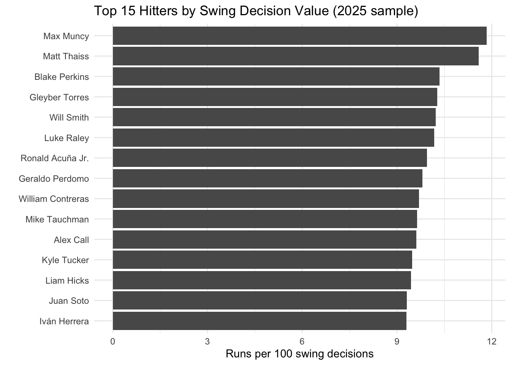
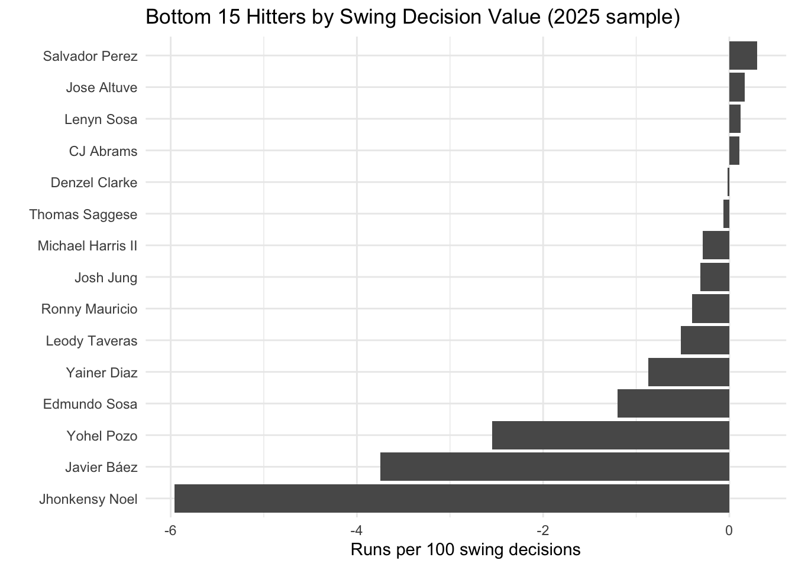
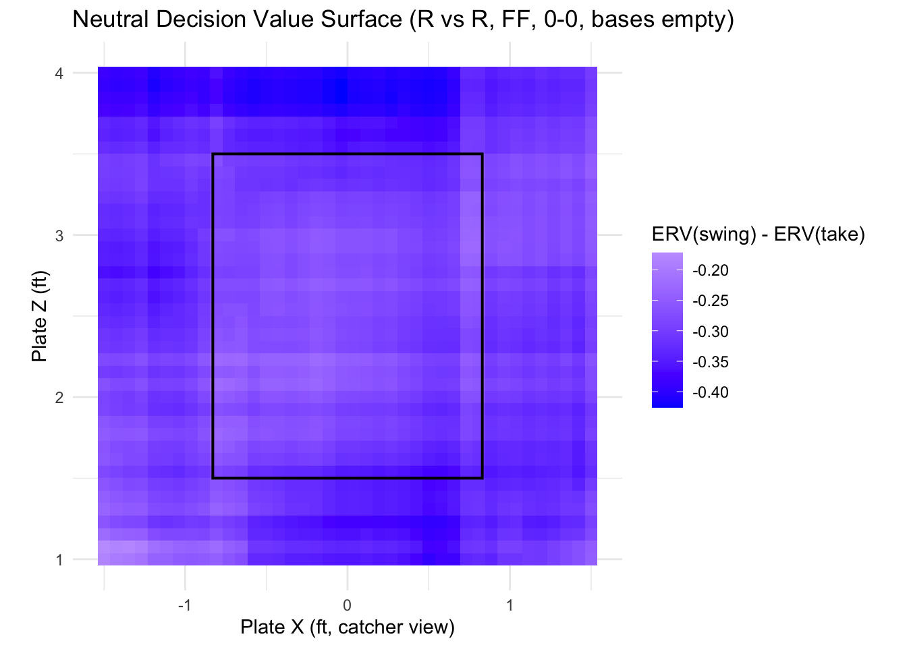
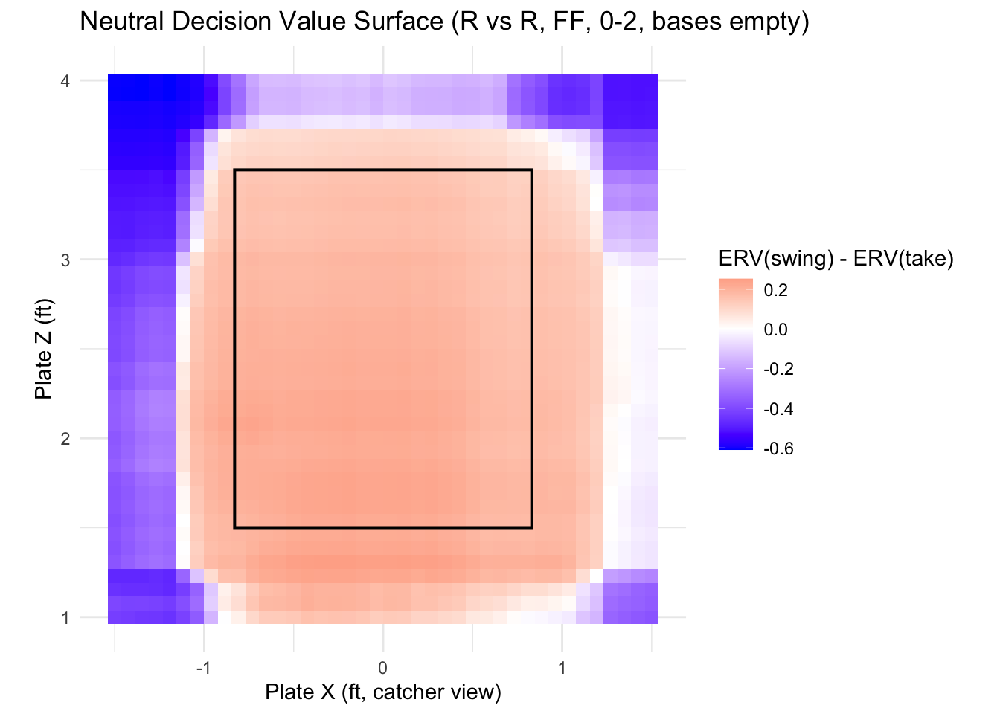
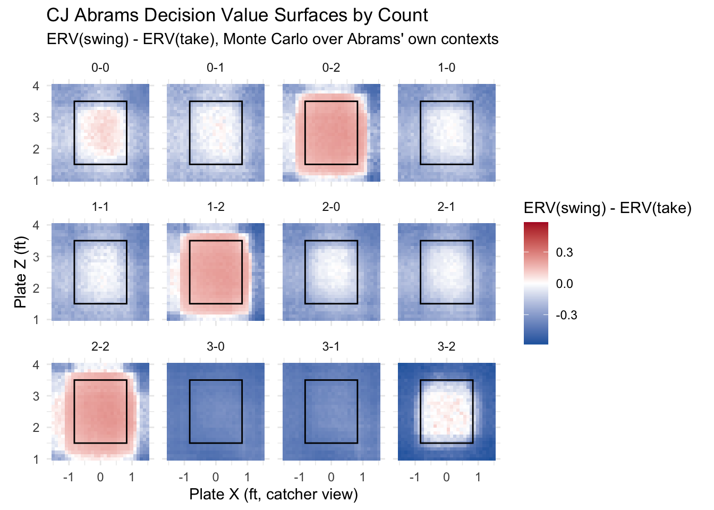

library(tidyverse)
library(xgboost)
library(data.table)
library(janitor)
library(keras)
library(Matrix) # For XGBoost
library(stringr)
library(ggplot2)
library(dplyr)
library(tidyr)
library(purrr)
statcast_2025 <- read_csv("statcast_2025.csv", show_col_types = FALSE)
DT <- as.data.table(statcast_2025)
batter_name_from_des <- statcast_2025 %>%
filter(!is.na(des)) %>%
mutate(
# Extract batter name before common verbs: "grounds", "singles", etc.
batter_name_guess = str_extract(
des,
"^[^,]+?(?= grounds| singles| homers| lines| flies| strikes| walks| hits| bunts| pops| reaches)"
)
) %>%
filter(!is.na(batter_name_guess)) %>%
group_by(batter) %>%
summarise(
n_rows = n(),
n_names = n_distinct(batter_name_guess),
batter_name = names(sort(table(batter_name_guess), decreasing = TRUE))[1],
.groups = "drop"
)Batter Swing Decision Model (ERV & SDV), R
Batting
Machine Learning
R
Swing Decision Value (SDV) Modeling
Swing decisions sit at the center of modern hitting analytics: every pitch presents a choice, and the value of swinging versus taking varies dramatically with location, count, pitch type, and game context. For this project, I built a full Expected Run Value (ERV)–based swing decision model that quantifies this choice on every pitch of the 2025 season. By modeling swing and take outcomes separately using XGBoost, estimating their run-value consequences across thousands of game states, and combining them into a unified “decision value,” the framework produces intuitive zone maps, batter-specific profiles, and actionable insights. This gives us a scalable, data-driven way to evaluate decision quality—moving beyond results to measure the underlying process that defines elite hitters.
Set Up
Cleaning & defining swings vs takes
sc <- statcast_2025 %>%
filter(game_year == 2025,
game_type == "R", # Only regular season
!grepl("bunt", description, ignore.case = TRUE),
events != "intent_walk")
swing_descriptions <- c(
"swinging_strike", "foul", "hit_into_play", "swinging_strike_blocked",
"foul_tip", "foul_bunt", "missed_bunt"
)
sc <- sc %>%
mutate(
description_clean = tolower(description),
is_swing = case_when(
type == "X" ~ 1L, # ball in play
str_detect(description_clean, paste(swing_descriptions, collapse = "|")) ~ 1L,
TRUE ~ 0L
)
)Run value framework (ERV)
sc <- sc %>%
mutate(rv = delta_run_exp)
sc <- sc %>%
mutate(
event_cat = case_when(
events %in% c("single") ~ "1B",
events %in% c("double") ~ "2B",
events %in% c("triple") ~ "3B",
events %in% c("home_run") ~ "HR",
events %in% c("walk", "hit_by_pitch", "intent_walk") ~ "BB_HBP",
events %in% c("strikeout") &
str_detect(description_clean, "swinging") ~ "K_swing",
events %in% c("strikeout") &
str_detect(description_clean, "called") ~ "K_look",
type == "B" ~ "ball",
type == "S" & str_detect(description_clean, "called_strike") ~ "called_strike",
type == "S" & str_detect(description_clean, "foul") ~ "foul",
type == "S" & str_detect(description_clean, "swinging") ~ "swing_miss",
type == "X" & events %in% c("field_error") ~ "reach_error",
type == "X" & is.na(events) ~ "inplay_out", # misc outs
TRUE ~ "other"
)
)
# Sanity check
table(sc$event_cat)
1B 2B 3B ball BB_HBP
26115 7745 628 238 16722
called_strike foul HR K_look K_swing
94 2935 5650 9363 28247
other reach_error swing_miss
83752 1010 118 sc <- sc %>%
mutate(
base_state = paste0(
ifelse(!is.na(on_1b), "1", "0"),
ifelse(!is.na(on_2b), "1", "0"),
ifelse(!is.na(on_3b), "1", "0")
),
count_str = paste0(balls, "-", strikes),
state_id = paste(base_state, outs_when_up, count_str, sep = "_")
)Two-model setup: swing (ERV) and take (ERV)
Helper: Predict ERV(swing) and ERV(take) for any set of pitches
# This function:
# 1. Uses `xgb_swing` and `xgb_take` to get outcome probabilities.
# 2. Looks up the RV for each `(event_cat, state_id)`.
# 3. Returns `ERV_swing` and `ERV_take` per row.
# Helper: get RV vector for a given state_id (with global fallback)
get_rv_vec <- function(state_id_i) {
# RV for that state
rv_i <- rv_lookup %>%
filter(state_id == state_id_i)
if (nrow(rv_i) == 0) {
# Fallback: use global RV by event
rv_i <- rv_global %>%
rename(avg_rv = avg_rv_global)
}
# Align with event_levels
rv_vec <- rv_i$avg_rv[match(event_levels, rv_i$event_cat)]
# Replace NA with 0 (rare events with no RV estimate)
rv_vec[is.na(rv_vec)] <- 0
rv_vec
}
# Main function: ERV for swing vs take
predict_erv_decision <- function(X_mat, state_vec) {
n <- nrow(X_mat)
C <- length(event_levels)
# Predict probabilities
pswing <- predict(xgb_swing, newdata = X_mat)
ptake <- predict(xgb_take, newdata = X_mat)
# Reshape to n x C
pswing <- matrix(pswing, nrow = n, ncol = C, byrow = TRUE)
ptake <- matrix(ptake, nrow = n, ncol = C, byrow = TRUE)
colnames(pswing) <- event_levels
colnames(ptake) <- event_levels
erv_swing <- numeric(n)
erv_take <- numeric(n)
for (i in seq_len(n)) {
rv_vec <- get_rv_vec(state_vec[i])
erv_swing[i] <- sum(pswing[i, ] * rv_vec)
erv_take[i] <- sum(ptake[i, ] * rv_vec)
}
tibble(
erv_swing = erv_swing,
erv_take = erv_take
)
}Compute ERV(swing), ERV(take) and Decision Value for all pitches
# Here I apply the helper to **every modeled pitch**, then compute **decision value** per pitch and aggregate to SDV.
# ERV for all modeled pitches
erv_all <- predict_erv_decision(
X_mat = X_full,
state_vec = sc_model$state_id
)
# Decision value per pitch:
# if swing: DV = ERV_swing - ERV_take
# if take: DV = ERV_take - ERV_swing
sc_results <- sc_model %>%
mutate(
erv_swing_hat = erv_all$erv_swing,
erv_take_hat = erv_all$erv_take,
decision_value = ifelse(is_swing == 1L,
erv_swing_hat - erv_take_hat,
erv_take_hat - erv_swing_hat)
)
sc_results_named <- sc_results %>%
left_join(
batter_name_from_des %>%
select(batter, batter_name),
by = "batter"
) %>%
mutate(
# Fallback label if we couldn't parse a name from des
batter_name = if_else(
is.na(batter_name),
paste0("Unknown_", batter),
batter_name
)
)Swing Decision Value (SDV) by Batter
sdv_batter <- sc_results_named %>%
group_by(batter, batter_name) %>%
summarise(
n_pitches = n(),
n_swings = sum(is_swing),
total_dv = sum(decision_value, na.rm = TRUE),
mean_dv = mean(decision_value, na.rm = TRUE),
dv_per_100_decisions = 100 * mean_dv,
.groups = "drop"
) %>%
# Minimum opportunities filter (I picked 150 arbitrarily)
filter(n_pitches >= 150) %>%
arrange(desc(dv_per_100_decisions))
sdv_batterSDV Leaderboard Plots
# Top 15
sdv_top <- sdv_batter %>%
slice_max(dv_per_100_decisions, n = 15)
ggplot(sdv_top,
aes(x = reorder(batter_name, dv_per_100_decisions),
y = dv_per_100_decisions)) +
geom_col() +
coord_flip() +
labs(
title = "Top 15 Hitters by Swing Decision Value (2025 sample)",
x = "",
y = "Runs per 100 swing decisions"
) +
theme_minimal()
# Bottom 15
sdv_bottom <- sdv_batter %>%
slice_min(dv_per_100_decisions, n = 15)
ggplot(sdv_bottom,
aes(x = reorder(batter_name, dv_per_100_decisions),
y = dv_per_100_decisions)) +
geom_col() +
coord_flip() +
labs(
title = "Bottom 15 Hitters by Swing Decision Value (2025 sample)",
x = "",
y = "Runs per 100 swing decisions"
) +
theme_minimal()
SDV Decomposition: In-Zone vs Out-of-Zone
This gives a “zone discipline vs chase discipline” flavor, letting you say things like:
Hitter X adds the most value by not chasing (out-of-zone SDV).”
Hitter Y is great at attacking in-zone pitches but leaks value out of the zone.”
sc_results_named <- sc_results_named %>%
mutate(
in_zone = ifelse(zone %in% 1:9, "In-Zone", "Out-of-Zone")
)
sdv_batter_zone <- sc_results_named %>%
group_by(batter, batter_name, in_zone) %>%
summarise(
n_pitches = n(),
n_swings = sum(is_swing),
total_dv = sum(decision_value, na.rm = TRUE),
mean_dv = mean(decision_value, na.rm = TRUE),
dv_per_100_decisions = 100 * mean_dv,
.groups = "drop"
) %>%
filter(n_pitches >= 10) # small per-bucket threshold
sdv_batter_zone %>%
arrange(desc(dv_per_100_decisions)) %>%
slice_head(n = 10)Neutral Decision Value Surface (league-average)
make_sim_grid <- function(pitch_type = "FF") {
expand_grid(
plate_x = seq(-1.5, 1.5, length.out = 40),
plate_z = seq(1.0, 4.0, length.out = 40)
) %>%
mutate(
zone = NA_real_, # let model infer via location
release_speed = 94,
pfx_x = 0,
pfx_z = 10,
release_extension = 6.0,
balls = 0,
strikes = 0,
outs_when_up = 0,
inning = 1,
home_score_diff = 0,
bat_score_diff = 0,
stand = "R",
p_throws = "R",
pitch_type = pitch_type,
base_state = "000",
count_str = "0-0",
state_id = paste(base_state, outs_when_up, count_str, sep = "_")
)
}
# 1) Build neutral grid
sim_grid <- make_sim_grid("FF")
# 2) Match numeric preprocessing from model_df
sim_grid <- sim_grid %>%
mutate(
across(all_of(num_vars), as.numeric)
)
# 3) Handle categoricals and force same factor levels as in training
# - replace NA with "UNK"
# - use levels from model_df so sparse.model.matrix sees full factor space
sim_grid <- sim_grid %>%
mutate(
across(all_of(cat_vars), ~replace_na(as.character(.x), "UNK"))
)
for (v in cat_vars) {
sim_grid[[v]] <- factor(sim_grid[[v]],
levels = sort(unique(model_df[[v]])))
}
# 4) Build design matrices using the SAME dummy_formula as training
X_sim_num <- as.matrix(sim_grid[, num_vars])
X_sim_cat <- sparse.model.matrix(dummy_formula, data = sim_grid)
X_sim <- cbind(X_sim_num, X_sim_cat)
# 5) Get ERV(swing) and ERV(take) for the grid
erv_sim <- predict_erv_decision(X_sim, sim_grid$state_id)
sim_grid <- sim_grid %>%
bind_cols(erv_sim) %>%
mutate(decision_value = erv_swing - erv_take)ggplot(sim_grid, aes(x = plate_x, y = plate_z, fill = decision_value)) +
geom_tile() +
scale_fill_gradient2(
midpoint = 0,
low = "blue", mid = "white", high = "red",
name = "ERV(swing) - ERV(take)"
) +
coord_equal() +
annotate(
"rect",
xmin = -0.83, xmax = 0.83,
ymin = 1.5, ymax = 3.5,
color = "black", fill = NA, linewidth = 0.7
) +
labs(
title = "Neutral Decision Value Surface (R vs R, FF, 0-0, bases empty)",
x = "Plate X (ft, catcher view)",
y = "Plate Z (ft)"
) +
theme_minimal()
Interpretation
This surface shows the neutral swing decision landscape for a representative RHP vs RHB four-seam fastball in a 0–0 count with bases empty. The colors represent ERV(swing) – ERV(take) at each location in the strike zone, where negative values mean the model believes a take is (on average) the better run-value decision, while positive values would favor a swing. Interestingly, the entire map is shaded slightly negative, including most of the strike zone. That might look counterintuitive at first, but it actually reflects the underlying run-value baseline: in an average, league-wide 0–0 count, taking a pitch is usually a slightly better expected-value outcome than swinging, unless the pitch is in a particularly damage-prone location. Swings only produce sizable positive RV on a small subset of outcomes (solid contact), whereas takes avoid most of the negative RV from weak contact or whiffs. Because the map here is neutralized across all hitters and pitchers, it’s intentionally “flat” — showing that, on average, hitters don’t gain RV by swinging at random zone locations, and that the positive-value swing regions for specific hitters emerge only when we condition on their profiles later.
Same plot but for 0-2 counts
# Build neutral grid for 0-2
sim_grid_02 <- expand_grid(
plate_x = seq(-1.5, 1.5, length.out = 40),
plate_z = seq(1.0, 4.0, length.out = 40)
) %>%
mutate(
zone = NA_real_, # let model infer via location
release_speed = 94,
pfx_x = 0,
pfx_z = 10,
release_extension = 6.0,
balls = 0,
strikes = 2, # <-- 0-2 count
outs_when_up = 0,
inning = 1,
home_score_diff = 0,
bat_score_diff = 0,
stand = "R",
p_throws = "R",
pitch_type = "FF",
base_state = "000",
count_str = "0-2", # <-- 0-2 label
state_id = paste(base_state, outs_when_up, count_str, sep = "_")
)
# Match numeric preprocessing from model_df
sim_grid_02 <- sim_grid_02 %>%
mutate(
across(all_of(num_vars), as.numeric)
)
# Handle categoricals and force same factor levels as in training
sim_grid_02 <- sim_grid_02 %>%
mutate(
across(all_of(cat_vars), ~replace_na(as.character(.x), "UNK"))
)
for (v in cat_vars) {
sim_grid_02[[v]] <- factor(
sim_grid_02[[v]],
levels = sort(unique(model_df[[v]]))
)
}
# Build design matrices using the SAME dummy_formula as training
X_sim_num_02 <- as.matrix(sim_grid_02[, num_vars])
X_sim_cat_02 <- sparse.model.matrix(dummy_formula, data = sim_grid_02)
X_sim_02 <- cbind(X_sim_num_02, X_sim_cat_02)
# Get ERV(swing) and ERV(take) for the 0-2 grid
erv_sim_02 <- predict_erv_decision(X_sim_02, sim_grid_02$state_id)
sim_grid_02 <- sim_grid_02 %>%
bind_cols(erv_sim_02) %>%
mutate(decision_value = erv_swing - erv_take)
# Plot
ggplot(sim_grid_02, aes(x = plate_x, y = plate_z, fill = decision_value)) +
geom_tile() +
scale_fill_gradient2(
midpoint = 0,
low = "blue", mid = "white", high = "red",
name = "ERV(swing) - ERV(take)"
) +
coord_equal() +
annotate(
"rect",
xmin = -0.83, xmax = 0.83,
ymin = 1.5, ymax = 3.5,
color = "black", fill = NA, linewidth = 0.7
) +
labs(
title = "Neutral Decision Value Surface (R vs R, FF, 0-2, bases empty)",
x = "Plate X (ft, catcher view)",
y = "Plate Z (ft)"
) +
theme_minimal()
Interpretation
This plot now shows the neutral swing decision surface for a RHP vs RHB four-seam fastball in a 0–2 count, with bases empty. Unlike the 0–0 landscape, this one flips dramatically: the entire strike zone, as well as a border surrounding the entire zone, now shows positive ERV(swing) – ERV(take). This of course makes intuitive sense. The model learned that hitters should generally be in protect mode on 0–2, expanding their swing decisions throughout the zone and even a bit beyond it. This contrast with the 0–0 plot shows that my model is capturing realistic baseball behavior driven by run-value consequences rather than simply location-based heuristics. The plot makes me even more confident in my model.
Another couple diagnostics
diag_df <- sc_results_named %>%
mutate(
erv_decision_hat = ifelse(is_swing == 1L, erv_swing_hat, erv_take_hat)
)
diag_df %>%
summarise(
mean_actual_rv = mean(rv, na.rm = TRUE),
mean_pred_erv = mean(erv_decision_hat, na.rm = TRUE)
)They’re extremely close, showing that my model behaves quite reasonably.
diag_by_count <- sc_results_named %>%
mutate(
count_str = paste0(balls, "-", strikes),
erv_decision_hat = ifelse(is_swing == 1L, erv_swing_hat, erv_take_hat)
) %>%
group_by(count_str) %>%
summarise(
n = n(),
mean_actual_rv = mean(rv, na.rm = TRUE),
mean_pred_erv = mean(erv_decision_hat, na.rm = TRUE),
.groups = "drop"
) %>%
arrange(desc(n))
diag_by_count %>% slice_head(n = 10)Better yet, my model is extremely well-calibrated across all possible counts.
CJ Abrams: Decision Value Surfaces by Count (faceted)
# Find CJ Abrams' batter ID
abrams_row <- sdv_batter %>%
filter(str_detect(batter_name, regex("Abrams", ignore_case = TRUE))) %>%
head(1)
abrams_id <- abrams_row$batter
abrams_name <- abrams_row$batter_name
abrams_id[1] 682928abrams_name[1] "CJ Abrams"# All pitches for Abrams
abrams_pitches <- sc_results_named %>%
filter(batter == abrams_id)
# draw Abrams contexts for a given count
draw_context_count <- function(b, s, n) {
ctx <- abrams_pitches %>%
filter(balls == b, strikes == s)
if (nrow(ctx) == 0) return(NULL)
ctx %>%
slice_sample(n = n, replace = TRUE) %>%
select(all_of(setdiff(model_vars, c("plate_x", "plate_z"))), state_id)
}
counts_to_plot <- abrams_pitches %>%
count(balls, strikes, name = "n_pitches") %>%
arrange(balls, strikes)
# Build decision surfaces for each count via Monte Carlo
# grid resolution and MC reps per grid cell
px_seq <- seq(-1.5, 1.5, length.out = 30)
pz_seq <- seq(1.0, 4.0, length.out = 30)
n_mc <- 80 # increase for smoother surfaces, decrease for speed
abrams_count_surfaces <- purrr::map_dfr(
seq_len(nrow(counts_to_plot)),
function(i) {
b <- counts_to_plot$balls[i]
s <- counts_to_plot$strikes[i]
n_here <- counts_to_plot$n_pitches[i]
# grid for this count
grid_cs <- expand_grid(
plate_x = px_seq,
plate_z = pz_seq
) %>%
mutate(
balls = b,
strikes = s,
count_str = paste0(balls, "-", strikes)
)
# For each grid point, Monte Carlo over Abrams' contexts at this count
res_cs <- purrr::map_dfr(seq_len(nrow(grid_cs)), function(j) {
px <- grid_cs$plate_x[j]
pz <- grid_cs$plate_z[j]
ctx <- draw_context_count(b, s, n_mc)
if (is.null(ctx)) return(NULL)
ctx <- ctx %>%
mutate(
plate_x = px,
plate_z = pz
)
# Preprocess to match model_df
ctx <- ctx %>%
mutate(
across(all_of(num_vars), as.numeric),
across(all_of(cat_vars), ~replace_na(as.character(.x), "UNK"))
)
for (v in cat_vars) {
ctx[[v]] <- factor(
ctx[[v]],
levels = sort(unique(model_df[[v]]))
)
}
X_num_ctx <- as.matrix(ctx[, num_vars])
X_cat_ctx <- sparse.model.matrix(dummy_formula, data = ctx)
X_ctx <- cbind(X_num_ctx, X_cat_ctx)
erv_ctx <- predict_erv_decision(X_ctx, ctx$state_id)
tibble(
plate_x = px,
plate_z = pz,
balls = b,
strikes = s,
count_str = paste0(b, "-", s),
decision_value = mean(erv_ctx$erv_swing - erv_ctx$erv_take)
)
})
res_cs
}
)
# Drop any counts that had no usable context
abrams_count_surfaces <- abrams_count_surfaces %>%
filter(!is.na(decision_value))
# Symmetric color limits across all counts
max_abs_dv <- max(abs(abrams_count_surfaces$decision_value), na.rm = TRUE)
# Plot faceted decision surfaces by count
ggplot(abrams_count_surfaces,
aes(x = plate_x, y = plate_z, fill = decision_value)) +
geom_tile() +
scale_fill_gradient2(
midpoint = 0,
low = "#2166ac", # strong blue for take-favored
mid = "white",
high = "#b2182b", # strong red for swing-favored
limits = c(-max_abs_dv, max_abs_dv),
name = "ERV(swing) - ERV(take)"
) +
coord_equal() +
annotate(
"rect",
xmin = -0.83, xmax = 0.83,
ymin = 1.5, ymax = 3.5,
color = "black", fill = NA, linewidth = 0.5
) +
facet_wrap(~ count_str) +
labs(
title = "CJ Abrams Decision Value Surfaces by Count",
subtitle = "ERV(swing) - ERV(take), Monte Carlo over Abrams' own contexts",
x = "Plate X (ft, catcher view)",
y = "Plate Z (ft)"
) +
theme_minimal()
Conclusion
This project builds a fully operational, pitch-by-pitch swing–take decision model grounded in Expected Run Value (ERV). By separating swing and take outcomes, modeling their probabilities independently, and recombining them into a unified decision value framework, we can evaluate not only what happened on a pitch, but what should have happened. The analytics pipeline successfully maps decision value across the strike zone, by count, pitch type, and even for individual hitters, demonstrating that the model captures real-world baseball logic (e.g., protect mode on two strikes, auto-take counts, and the shifting value of aggression). From a practical MLB perspective, this provides a quantitative lens for coaching swing decisions, comparing hitters’ judgment ability, identifying zones where players are leaving value on the table, and optimizing approach plans. While this version is already valuable, future enhancements such as hitter- and pitcher-specific models, improved xwOBA-based outcome modeling, smoother Monte Carlo surfaces, and integrating pitch intent would sharpen the system further and push it toward front-office grade decision-tooling.